Demo 1: VMware to OpenShift Virtualization (cold migration)¶
Version 0.4.3 · draft · 2026-10-06 · class/demos/01-vmware-to-ove-cold.md
What you will learn¶
You will take your own Windows Server + PostgreSQL VM off VMware vSphere and rehost it on OpenShift Virtualization with the Migration Toolkit for Virtualization (MTV). Along the way you will see how OpenShift reproduces what vSphere gave the VM: VLAN-backed port groups become Linux bridges and network attachments, datastores become storage classes, and VMware Tools gives way to virtio drivers and the QEMU guest agent. You will also see when to replatform from a Red Hat template instead of rehosting. At every stage you write data and then prove that it arrived intact.
How the lab is set up for this demo¶
The CI customization pre-built everything below (see the lab diagram and Lab 0). Every staged piece has a "how it was built" section in Lab S, with the CLI and console steps to build it yourself and links to the Red Hat docs.
| Component | State when you start | How it was built · Red Hat docs |
|---|---|---|
Your VM win-pg-s<NN> |
on vSphere vcenter0<N>, powered on, in your own folder vms/students/<class ID>, at its own address $VM_IP (.100+NN) on port group vm-network (VLAN 22+N). A full clone of the instructor's win-pg-i01: Windows Server 2022, VMware Tools, PostgreSQL 16 with WAL on L: (5 GB) and data on D: (10 GB), the heartbeat writer, the integrity toolkit, and your Windows login .\student-NN (a local administrator on your VM). |
S.11 |
| Site A (the target) | OpenShift Virtualization (ove: cnv, from demo-openshift); NMState bridge br<VLAN> with NAD vmnet<VLAN>; storage on ODF (ocs-storagecluster-ceph-rbd-virtualization); ACM and cert-manager (base build, the same on both sites). |
S.2 · S.3 · S.4 · OpenShift Virtualization · NMState [verify link] · ODF |
| MTV on site A | the operator, its Migration for Virtualization console menu, provider ovedr-vcenter0<N> linked to vCenter (least-privilege ovedr-mtv@vsphere.local), network maps …-net (pod) and …-net-bridge (your VLAN), storage map …-storage (datastore → ODF). |
S.5 · S.6 · S.8 · MTV 2.11 · Installing and using MTV [verify link] |
Your migration plan d1-<your VM> |
staged, NOT started: cold, your VM → your own namespace ($VMNS, your class ID) on site A, the bridge network map (your VM keeps $VM_IP) and the storage map. It shows Ready in the console. |
S.12 · Creating and running a migration plan [verify link] |
Your namespace $VMNS (your class ID) on site A and site B, plus ovedr-app |
in yours: admin rights for you, and Service/<your VM>-sql waiting for your VM to arrive; in ovedr-app: the shared sql-client. |
S.9 · Using RBAC [verify link] |
| Read access for students | MTV objects in openshift-mtv (and the right to run plans and migrations), NNCPs, storage classes, ACM clusters. |
S.9 |
| Site B | the same operators, on NFS (nfs-csi); its own staged plan d1b-<your VM>-to-<B> waits for Demo 1b. Not used in this demo. |
S.12 |
You do yourself: inspect the VM and the OpenShift side, optionally create your own provider, review your staged plan (and see how it would be built), shut down your VM, and, as the last step, start your plan. Then start the VM on OpenShift, swap VMware Tools for virtio and the guest agent, and prove your data. Your VM keeps its own address, so Lab 0 §0.6 is not needed.
Pattern at every stage: inject (mark + a line in your file) → change → read (verify + read the file).
Before you start: complete Lab 0 in this terminal. You need
$ME,$N,$A,$B,$VM,$VC,$VM_IPand$WINUSER, thesite-a/site-bcontexts, and the helperssql,mark,load,verify,aliveandwhere.Your own VM. Every step below acts on your
$VM(win-pg-s<NN>), so you drive your own migration from start to finish. 🧑🏫 marks the few steps only the instructor runs.
1.1 Login recap (2 min)¶
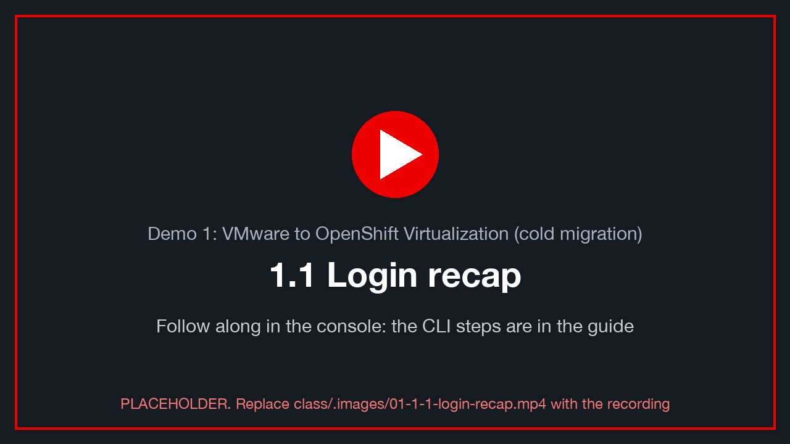class/.images/01-1-1-login-recap.mp4).
oc --context site-a whoami && oc --context site-b whoami # both print $ME
echo "vm=$VM db-host=${PGHOST:-$PGHOST_SITE_A}" # still the vSphere IP ($VM_IP) for now
alive site-a # staleness < 10 s
Check: ✅ both contexts answer as $ME, and the heartbeat is fresh. If not, go back to Lab 0.
1.2 Inspect the VMware VM (10 min)¶
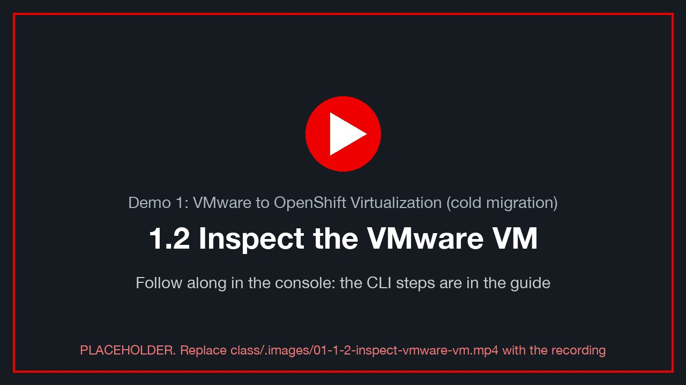class/.images/01-1-2-inspect-vmware-vm.mp4).
In vCenter¶
Open VMs and Templates → datacenter01 → vms → students → <your class ID> → your VM (win-pg-s<NN>), then look at:
| Where | What to note |
|---|---|
| Summary → VM Hardware | 4 vCPU, 8 GB, three hard disks: 60 GB (C:), 5 GB (L: = WAL), 10 GB (D: = data) |
| Summary → Guest OS | VMware Tools: Running, version …. This is what OpenShift will replace (§1.6) |
| Summary → Network adapter | port group vm-network, adapter e1000e, IP $VM_IP |
Networking → Distributed port groups → vm-network |
the VLAN ID of the port group. Write it down, because §1.3 maps it to a bridge |
📸 01-vcenter-vm-summary: VM summary with the three disks and VMware Tools Running.
📸 01-vcenter-portgroup-vlan: the port group's VLAN setting.
✍️ The VLAN ID of vm-network: __ (expected: 22 + N, so 23 for vcenter01).
Inside Windows (your touch file)¶
Launch the Web Console from vCenter, send Ctrl-Alt-Del, and log in as .\<WINUSER> (for example
.\student-03). Open PowerShell:
$f = "C:\Users\Public\ovedr\$env:USERNAME.txt"
Add-Content $f "$(Get-Date -Format o) d1-before on=vSphere host=$env:COMPUTERNAME"
Get-Content $f
Get-Service VMTools, postgresql-16 | Format-Table Name, Status
Get-Volume -DriveLetter C, D, L | Format-Table DriveLetter, FileSystemLabel, Size
✅ VMTools is Running. postgresql-16 is Running. D: is pgdata and L: is pg_wal.
Inject: your database row¶
mark site-a d1-before
verify site-a
✍️ Row 1.1: the mark id, chain_ok, fingerprint.
1.3 Review the OpenShift side (15 min)¶
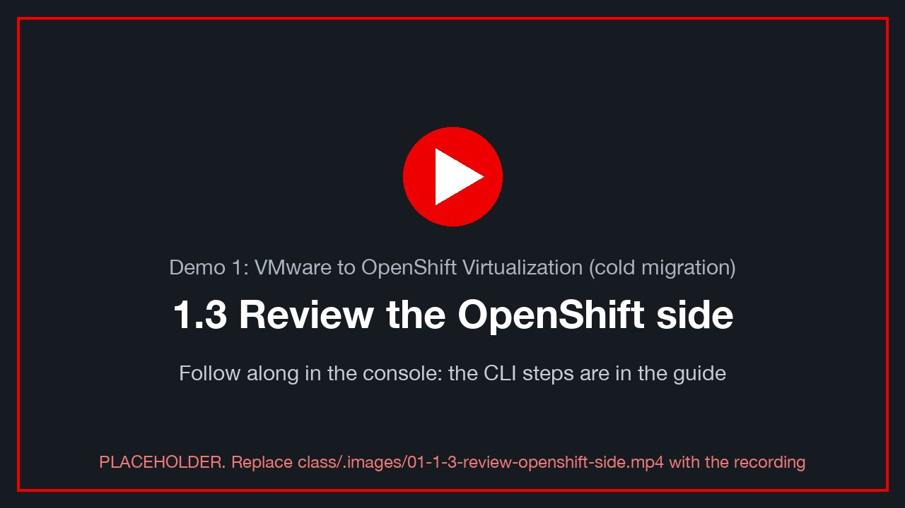class/.images/01-1-3-review-openshift-side.mp4).
Everything here is read-only. Run it on site A (the migration target), then repeat on site B if you are curious: both sites were built the same way.
The Migration Toolkit (MTV / Forklift)¶
oc --context site-a get csv -n openshift-mtv | grep -i mtv # operator installed, Succeeded
oc --context site-a get forkliftcontroller -n openshift-mtv # the operator's instance
oc --context site-a get pods -n openshift-mtv # controller, inventory, UI plugin
oc --context site-a get providers -n openshift-mtv # host (this cluster) + ovedr-vcenter0N + ovedr-ocp-<B>
Console: Migration for Virtualization → Overview, then Providers.
📸 01-mtv-overview: the Migration overview page.
If
get providers -n openshift-mtvsays forbidden, your role cannot read the MTV namespace. Use the console pages, which the instructor's screen also shows [verify: BL-D09, student view on openshift-mtv].
Networking: from VLAN-backed port group to OpenShift bridge¶
On vSphere, the VM sits on a port group tagged with a VLAN. On OpenShift, the same VLAN reaches a VM in three layers:
| Layer | Object | What it does |
|---|---|---|
| Node | NodeNetworkConfigurationPolicy (NNCP) br<VLAN>-policy |
builds Linux bridge br<VLAN> on every node, on top of the trunk NIC, tagged with VLAN <VLAN> |
| Namespace | NetworkAttachmentDefinition (NAD) vmnet<VLAN> in default |
lets a VM plug a second NIC into that bridge (Multus) |
| Migration | NetworkMap ovedr-vcenter0N-net-bridge |
tells MTV: port group vm-network → NAD vmnet<VLAN> |
VLAN=$((22 + N))
oc --context site-a get nncp # br<VLAN>-policy … Available
oc --context site-a get nncp "br$VLAN-policy" -o yaml | sed -n '/desiredState:/,/status:/p'
oc --context site-a get nnce | grep "br$VLAN" # one per node: SuccessfullyConfigured
oc --context site-a -n default get net-attach-def "vmnet$VLAN" -o jsonpath='{.spec.config}' | jq .
✅ The NNCP is Available, every node's enactment is SuccessfullyConfigured, and the NAD's bridge is
br<VLAN>. That is the OpenShift twin of the vSphere port group.
The two network maps MTV can use, and the storage map:
oc --context site-a -n openshift-mtv get networkmap,storagemap
oc --context site-a -n openshift-mtv get networkmap "ovedr-vcenter0$N-net" -o jsonpath='{.spec.map}' | jq .
oc --context site-a -n openshift-mtv get networkmap "ovedr-vcenter0$N-net-bridge" -o jsonpath='{.spec.map}' | jq .
oc --context site-a -n openshift-mtv get storagemap "ovedr-vcenter0$N-storage" -o jsonpath='{.spec.map}' | jq .
oc --context site-a get storageclass # ODF's virtualization class (site A); site B: nfs-csi
| Map | Source → destination | When to choose it |
|---|---|---|
…-net |
vm-network → pod network |
the VM gets a cluster address. Clients reach it through Service/$VM-sql. This demo uses it. |
…-net-bridge |
vm-network → vmnet<VLAN> |
the VM stays on its own VLAN and keeps its subnet. Needs the static IP carried over (§1.5, note) |
…-storage |
datastore coresan01_data00 → ocs-storagecluster-ceph-rbd-virtualization on site A (ODF); nfs-csi on site B |
where each of the three disks lands. How it was built: Lab S §S.8 |
📸 01-nncp-available: NNCP list with Available.
📸 01-networkmap-bridge: the bridge network map in the console (Migration for Virtualization → Network maps).
Templates: the replatform alternative¶
Migration is rehosting: the same Windows install, disks and data, now on KVM. Replatforming means building a new VM from a clean, vendor-maintained image, and then moving only the application and data into it.
OpenShift Virtualization ships templates and boot sources for the replatform path:
oc --context site-a get templates -n openshift -l template.kubevirt.io/type=base \
-o custom-columns=NAME:.metadata.name,DISPLAY:'.metadata.annotations.openshift\.io/display-name' | head -20
oc --context site-a get datasources -n openshift-virtualization-os-images # rhel8, rhel9, centos-stream9, fedora …
oc --context site-a get dataimportcrons -n openshift-virtualization-os-images # keeps those images current, automatically
oc --context site-a get datasource rhel9 -n openshift-virtualization-os-images \
-o jsonpath='{.status.conditions[?(@.type=="Ready")].status}{"\n"}' # True: a RHEL 9 cloud image is ready to clone
Console: Virtualization → Catalog → Template catalog. The templates with a ✓ Source available badge boot from a Red Hat cloud image in seconds. Windows templates show no source, because Red Hat ships no Windows image: you upload your own golden image.
| Rehost (this demo) | Replatform | |
|---|---|---|
| What moves | the whole VM: OS, disks, data | data and application only |
| OS | the existing Windows, now with virtio drivers | a fresh image from a template (e.g. RHEL 9 + PostgreSQL) |
| Effort | low, minutes per VM | higher, because the app must be reinstalled |
| Result | same machine, new hypervisor | a clean, supported, cloud-native-ready VM |
📸 01-template-catalog: the template catalog with boot-source badges.
1.4 Link OpenShift to vCenter, and validate the link (10 min)¶
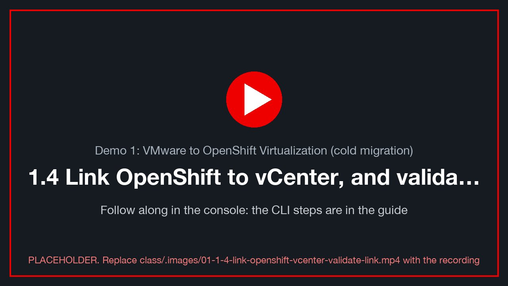class/.images/01-1-4-link-openshift-vcenter-validate-link.mp4).
The lab already created the link. A Provider of type vsphere named ovedr-vcenter0<N> logs in to vCenter as
a least-privilege account (ovedr-mtv@vsphere.local) and pulls an inventory of every VM, network and datastore.
Validate the existing link¶
P=ovedr-vcenter0$N
oc --context site-a -n openshift-mtv get provider "$P" \
-o jsonpath='{range .status.conditions[*]}{.type}={.status} {.message}{"\n"}{end}'
oc --context site-a -n openshift-mtv get provider "$P" -o jsonpath='{.spec.url}{"\n"}'
✅ Ready=True, ConnectionTestSucceeded=True, InventoryCreated=True, and the URL is
https://vcenter0<N>.demo.lab-paragonmicro.com/sdk.
Console: Migration for Virtualization → Providers → ovedr-vcenter0<N> → Virtual Machines. Find your VM
(win-pg-s<NN>) and open its Concerns column. Typical concerns are VMware Tools installed or static IP. Read them now,
because they explain §1.5 and §1.6.
📸 01-provider-ready: the provider page with Ready and the VM inventory.
Optional: create your own provider [verify: BL-D09]¶
This shows how the link is made. Use your own name, so that you never overwrite the class provider. The
provider belongs in your own namespace $VMNS, where you are admin.
Console: Migration for Virtualization → Providers → Create Provider → vSphere:
| Field | Value |
|---|---|
| Name | ovedr-vcenter-<WINUSER> |
| URL | https://vcenter0<N>.demo.lab-paragonmicro.com/sdk |
| Username / password | <ME>@vsphere.local / your class password |
| CA certificate | upload the chain from the command below, or tick Skip certificate validation (lab only) |
| VDDK image | leave empty (cold migration still works, just slower) |
YAML equivalent:
# vCenter's CA chain, taken from its TLS handshake
openssl s_client -connect "$VC:443" -showcerts </dev/null 2>/dev/null \
| awk '/BEGIN CERT/,/END CERT/' > /tmp/vc-chain.pem
read -rsp "class password: " PW; echo
oc --context site-a -n "$VMNS" create secret generic "ovedr-vcenter-$WINUSER" \
--from-literal=user="$ME@vsphere.local" --from-literal=password="$PW" \
--from-literal=url="https://$VC/sdk" --from-file=cacert=/tmp/vc-chain.pem \
--from-literal=insecureSkipVerify=false
unset PW
oc --context site-a -n "$VMNS" label secret "ovedr-vcenter-$WINUSER" \
createdForProviderType=vsphere createdForResourceType=providers
oc --context site-a -n "$VMNS" apply -f - <<EOF
apiVersion: forklift.konveyor.io/v1beta1
kind: Provider
metadata: { name: ovedr-vcenter-$WINUSER, namespace: $VMNS }
spec:
type: vsphere
url: https://$VC/sdk
secret: { name: ovedr-vcenter-$WINUSER, namespace: $VMNS }
EOF
oc --context site-a -n "$VMNS" get provider "ovedr-vcenter-$WINUSER" -w # Ctrl-C at Ready
✅ Ready. If it shows ConnectionTestFailed, read the message: x509 means a CA problem, and permission means
your vCenter role can log in but cannot read the whole inventory. Either is a useful lesson.
Afterwards, clean up: oc --context site-a -n "$VMNS" delete provider,secret "ovedr-vcenter-$WINUSER".
1.5 Cold migration (30 min)¶
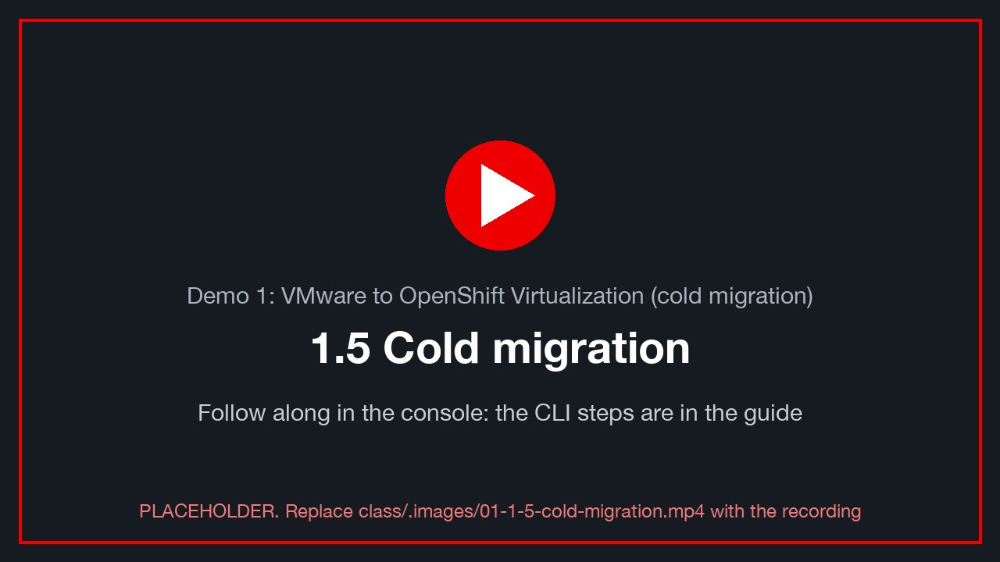class/.images/01-1-5-cold-migration.mp4).
A cold migration copies the disks while the VM is off. It is simple and consistent. The outage is the whole copy plus the driver conversion.
Inject before the move¶
mark site-a d1-before-migration "on=vSphere"
verify site-a
In the Windows console:
Add-Content "C:\Users\Public\ovedr\$env:USERNAME.txt" "$(Get-Date -Format o) d1-before-migration on=vSphere"
✍️ Row 1.2: mark id and fingerprint, before the migration.
Shut your VM down¶
In vCenter, choose your VM → Actions → Power → Shut Down Guest OS. (MTV can also power it off for you, but a clean guest shutdown flushes PostgreSQL first.)
# the heartbeat goes stale once the guest is down
alive site-a # staleness grows; then the query fails once Windows is off: expected
Review your staged plan¶
The lab already created your plan, d1-<your VM>, and left it not started. Read it before you run it.
Console: site A → Migration for Virtualization → Migration plans → d1-<your VM>: source provider, your VM,
target namespace your namespace ($VMNS), the bridge network map, the storage map, type Cold, status Ready.
📸 01-staged-plan: your plan's details page, Ready, with the Start button.
oc --context site-a -n openshift-mtv get plan "d1-$VM" \
-o jsonpath='{.spec.warm}{" "}{.spec.map.network.name}{" "}{.spec.map.storage.name}{" "}{.status.conditions[?(@.type=="Ready")].status}{"\n"}'
# false ovedr-vcenter0<N>-net-bridge ovedr-vcenter0<N>-storage True
oc --context site-a -n openshift-mtv get plan "d1-$VM" -o yaml | less # the whole object
How it was built, and why each field: Lab S §S.12 (the plan) and §S.8 (the maps). Red Hat: Creating and running a migration plan [verify link].
Build it yourself (learning path, optional)¶
To build the plan by hand, give it a different name (e.g. <your class ID>-cold-migration-plan): your VM can be in only one running
plan at a time, so start either the staged plan or yours, never both.
Console: site A → Migration for Virtualization → Migration plans → Create plan. The wizard has three parts: 1 Basic setup (General · Virtual machines · Network map · Storage map · Migration type), 2 Additional setup, and 3 Review and create.
1 · Basic setup → General:
| Field | Value |
|---|---|
| Plan name | <your class ID>-cold-migration-plan (e.g. student-03-0024-006-cold-migration-plan): unique, and not the staged d1-<your VM> |
| Plan project | openshift-mtv (where plans live) |
| Description | e.g. My VMware cold migration plan |
| Source provider | ovedr-vcenter0<N> |
| Target provider | host (this cluster) |
| Target project | your namespace ($VMNS, your class ID) |
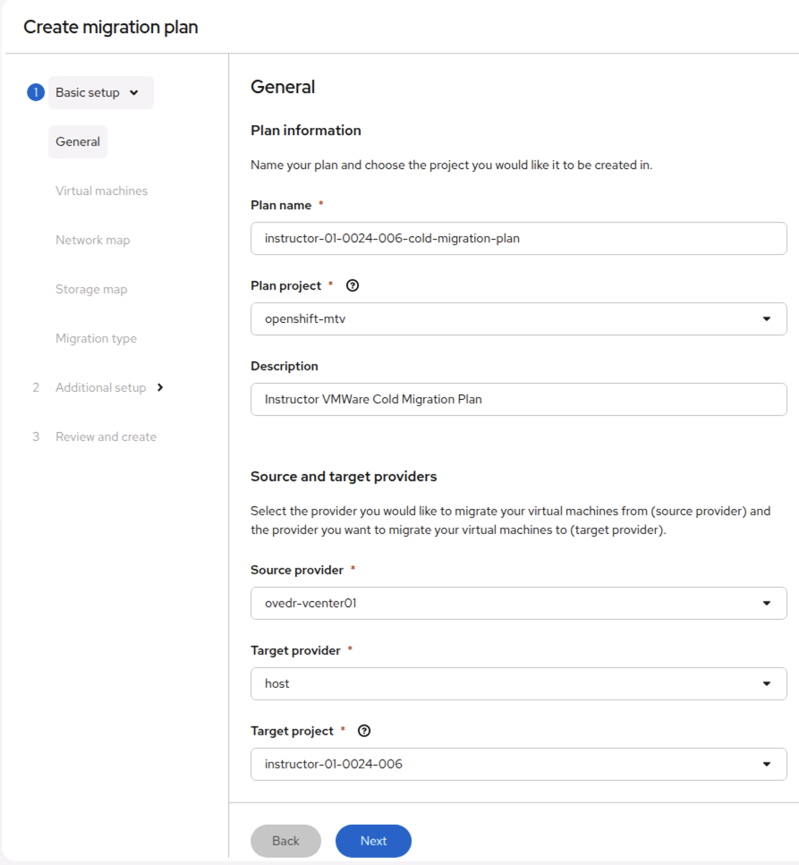
The General step, filled in by the instructor (instructor-01-0024-006, project openshift-mtv, source ovedr-vcenter01,
target host, target project instructor-01-0024-006). Use your class ID and namespace. Then Next.
The remaining steps:
| Step | Choose |
|---|---|
| Virtual machines | your VM only (win-pg-s<NN>) |
| Network map | ovedr-vcenter0<N>-net-bridge (vm-network → your VLAN's bridge: keeps your address) |
| Storage map | ovedr-vcenter0<N>-storage |
| Migration type | Cold |
| Additional setup | leave the defaults |
| Review and create | check every value, then Create plan (do not start it yet) |
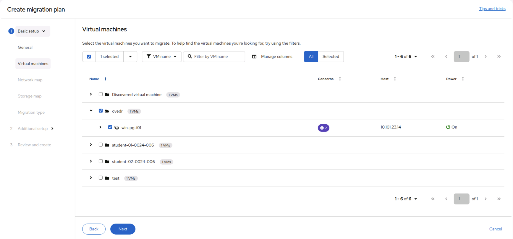
The Virtual machines step. VMs are grouped by vCenter folder: the instructor'swin-pg-i01 sits in ovedr, each
student's VM in their own folder (student-01-0024-006, …). Expand your folder and tick only your VM. The
Concerns badge lists MTV's pre-migration findings for that VM (expand the row to read them); they are warnings, not
blockers, for a cold migration.
🎬 The rest of the wizard (network map, storage map, migration type, review) is short and follows the table above; a short screen recording of the whole wizard replaces per-step screenshots (BL-D15).
If your plan says "Cannot start" (critical concerns)¶
 Two critical concerns block the start: the plan's maps don't cover your VM's network or its datastore. The two
information concerns are fine for a cold migration.
Two critical concerns block the start: the plan's maps don't cover your VM's network or its datastore. The two
information concerns are fine for a cold migration.
| Concern | What it means | Fix |
|---|---|---|
| VMNetworksNotMapped (critical) | Your VM's NIC is on a vSphere network (vm-network) that the plan's network map has no row for: usually because the wizard made a new, empty map |
Map vm-network |
| VMStorageNotMapped (critical) | Your VM's disks are on a datastore (coresan01_data00) that the plan's storage map has no row for |
Map coresan01_data00 |
| VM snapshot detected (info) | Your VM has a snapshot (the clone source ovedr-golden on win-pg-i01). MTV migrates the VM's current state |
Nothing to do |
| Disk serial numbers may be truncated (info) | disk.EnableUUID=TRUE; SCSI serials are shortened on OpenShift |
Nothing to do (the guest finds its disks by size and label, not by serial) |
Fix in the console: open the plan → Mappings tab → Edit mappings:
1. Network: source vm-network → target your VLAN's bridge default/vmnet<22+N> (keeps your address) or
Pod networking.
2. Storage: source coresan01_data00 → target this site's storage class (nfs-csi, or
ocs-storagecluster-ceph-rbd-virtualization on an ODF site).
3. Save. The concerns clear within a minute, and the status changes from Cannot start to Ready.
📸 01-plan-edit-mappings: the Mappings tab with both rows filled in.
Or, simplest, use the class's maps, which already cover both: build the plan again and at the wizard's Network map
and Storage map steps pick Use an existing map: ovedr-vcenter0<N>-net-bridge and ovedr-vcenter0<N>-storage.
These are the maps your staged plan d1-<your VM> uses, and that plan is Ready (Lab S S.8).
Fix from the command line: point the plan at the class's maps, then check the concerns are gone.
PLAN="$VMNS-cold-migration-plan"
oc --context site-a -n openshift-mtv patch plan "$PLAN" --type merge -p "{\"spec\":{\"map\":{
\"network\":{\"name\":\"ovedr-vcenter0$N-net-bridge\",\"namespace\":\"openshift-mtv\"},
\"storage\":{\"name\":\"ovedr-vcenter0$N-storage\",\"namespace\":\"openshift-mtv\"}}}}"
oc --context site-a -n openshift-mtv get plan "$PLAN" \
-o jsonpath='{range .status.conditions[*]}{.type}={.status} {.category}{"\n"}{end}' # no Critical left; Ready=True
What a map holds, side by side with the class's own (read-only for you):
oc --context site-a -n openshift-mtv get networkmap "ovedr-vcenter0$N-net-bridge" -o jsonpath='{.spec.map}{"\n"}'
oc --context site-a -n openshift-mtv get storagemap "ovedr-vcenter0$N-storage" -o jsonpath='{.spec.map}{"\n"}'
YAML equivalent (what the console creates; not started):
oc --context site-a apply -f - <<EOF
apiVersion: forklift.konveyor.io/v1beta1
kind: Plan
metadata: { name: $VMNS-cold-migration-plan, namespace: openshift-mtv }
spec:
warm: false
targetNamespace: $VMNS
provider:
source: { name: ovedr-vcenter0$N, namespace: openshift-mtv }
destination: { name: host, namespace: openshift-mtv }
map:
network: { name: ovedr-vcenter0$N-net-bridge, namespace: openshift-mtv }
storage: { name: ovedr-vcenter0$N-storage, namespace: openshift-mtv }
vms:
- name: $VM # your source VM on vSphere; on OpenShift it keeps the same name
EOF
One VM, one address. Every class VM has its own static address, so the bridge map lets each one keep it on OpenShift: twenty students run twenty plans side by side without colliding. Choose the pod map (
…-net) instead and the VM lands on the pod network, where its static address answers nothing: then follow Lab 0 §0.6.
Start your plan (your task: the last step)¶
Console: your plan → Start → confirm.
📸 01-plan-start: the Start confirmation for d1-<your VM>.
CLI (what the Start button creates):
oc --context site-a apply -f - <<EOF
apiVersion: forklift.konveyor.io/v1beta1
kind: Migration
metadata: { name: d1-$VM-1, namespace: openshift-mtv }
spec: { plan: { name: d1-$VM, namespace: openshift-mtv } }
EOF
Watch the pipeline¶
oc --context site-a -n openshift-mtv get plan "d1-$VM" -w # Ready → Executing → Succeeded
oc --context site-a -n openshift-mtv get migration "d1-$VM-1" \
-o jsonpath='{range .status.vms[*].pipeline[*]}{.name}{" "}{.phase}{" "}{.progress.completed}/{.progress.total}{"\n"}{end}'
oc --context site-a -n "$VMNS" get pvc,dv # three volumes appear and fill
The pipeline's phases, in order:
- Initialize and PreflightInspection
- DiskTransfer: three disks, so three DataVolumes
- ImageConversion:
virt-v2vinstalls the virtio drivers and the QEMU guest agent, and removes VMware specifics - VirtualMachineCreation
Console: Plans → d1-<VM> → the VM row → expand shows the same, with progress bars.
📸 01-plan-pipeline: the plan's per-VM pipeline mid-copy.
✍️ Row 1.3: the migration's start and end times (outage = guest shutdown → first heartbeat on OpenShift).
If a step fails: read the logs before you delete anything¶
 A failed cold migration: ImageConversion (virt-v2v) failed, and the error says "See pod logs for details". There is no
Cancel on a failed plan, only Delete, and deleting the plan deletes its pods and their logs, so read them first.
A failed cold migration: ImageConversion (virt-v2v) failed, and the error says "See pod logs for details". There is no
Cancel on a failed plan, only Delete, and deleting the plan deletes its pods and their logs, so read them first.
The conversion runs in a pod in your target namespace, named <plan>-<vm id>-<suffix>. After a failure it stays
there in status Error, with its full log.
Console: Workloads → Pods, project your namespace ($VMNS) → the pod named after your plan → Logs. Or
from the plan: Virtual machines → expand your VM → Migration resources → the pod.
Command line:
PLAN="d1-$VM" # or your own plan's name
oc --context site-a -n "$VMNS" get pods | grep "$PLAN" # the conversion pod (Error)
POD=$(oc --context site-a -n "$VMNS" get pods -o name | grep "$PLAN" | head -1)
oc --context site-a -n "$VMNS" logs "$POD" | grep -E 'virt-v2v: error|error:|HTTP' | sort | uniq -c | tail
oc --context site-a -n "$VMNS" logs "$POD" > "$PLAN.log" # keep the whole log
oc --context site-a -n openshift-mtv get migration -o json | jq -r --arg p "$PLAN" \
'.items[] | select(.spec.plan.name == $p) | .status.vms[] | .pipeline[] | "\(.name): \(.phase) \(.error.reasons // [] | join("; "))"'
Read the log bottom up: the last virt-v2v: error: line is the verdict, and the repeated lines above it are the
cause. For example, HTTP 404 on a …-flat.vmdk URL means MTV could not read the VM's disk from vCenter: the source
VM's files moved or were deleted after the plan started. The instructor can collect everything for Red Hat support with
MTV's must-gather: oc adm must-gather --image=<mtv-must-gather image for MTV 2.11> -- /usr/bin/targeted --plan=$PLAN
[verify: image name and targeted flags, MTV 2.11].
When you're done reading: Actions → Archive keeps the plan's history and removes its running resources, while Delete removes everything. Then fix the cause and start a new plan.
Power on in OpenShift¶
oc --context site-a -n "$VMNS" get vm "$VM" -o jsonpath='{.spec.runStrategy}{"\n"}'
virtctl --context site-a -n "$VMNS" start "$VM" 2>/dev/null \
|| oc --context site-a -n "$VMNS" patch vm "$VM" --type merge -p '{"spec":{"runStrategy":"Always"}}'
oc --context site-a -n "$VMNS" get vmi "$VM" -w # Scheduling → Running
(MTV starts the target if the source was running when the plan began. After a guest shutdown it may stay stopped, which is why this step exists [verify: target power state in this MTV release].)
Your VM keeps its address¶
The staged plan used the bridge map, so your VM's NIC is on the same VLAN with the same static address, and the
helpers keep using $VM_IP. (Only if you built and ran a plan with the pod map: follow
Lab 0 §0.6 with CTX=site-a.)
echo "PGHOST=${PGHOST:-$VM_IP}" # still your own address
oc --context site-a -n ovedr-app exec deploy/sql-client -- pg_isready -h "${PGHOST:-$VM_IP}" -p 5432
The database now lives on OpenShift¶
where # site-a Running node=…
alive site-a # postgres_started is NEW (the VM rebooted); staleness < 10 s again
verify site-a # your d1-before and d1-before-migration rows are present, chain_ok = t
mark site-a d1-after-migration "on=OVE site-a"
sql site-a -c "SELECT id, ts, date_trunc('second', gap) AS outage
FROM (SELECT id, ts, ts - lag(ts) OVER (ORDER BY id) AS gap FROM heartbeat) g
WHERE gap > interval '10 seconds' ORDER BY id DESC LIMIT 3;"
✅ chain_ok = t, and your two earlier marks are present.
✅ The newest heartbeat gap is the migration's outage.
✍️ Row 1.4: the outage from the gap query, plus the mark id and fingerprint after the move.
Your file, read on OpenShift¶
Console: Virtualization → VirtualMachines → your VM → Console (VNC). Send Ctrl-Alt-Del and log in as
.\<WINUSER>:
$f = "C:\Users\Public\ovedr\$env:USERNAME.txt"
Get-Content $f # lab0-hello … d1-before-migration: all there
Add-Content $f "$(Get-Date -Format o) d1-after-migration on=OVE"
📸 01-ove-console-touchfile: the OpenShift VNC console showing your file.
1.6 VMware Tools out, virtio and the QEMU guest agent in (10 min)¶
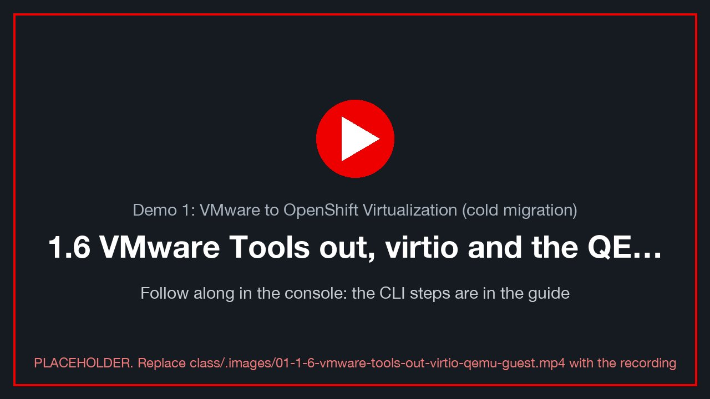class/.images/01-1-6-vmware-tools-out-virtio-qemu-guest.mp4).
On vSphere, VMware Tools provided paravirtual drivers and the guest agent. On OpenShift, virtio-win
drivers and the QEMU guest agent do that job. virt-v2v installed them during ImageConversion.
From OpenShift¶
oc --context site-a -n "$VMNS" get vmi "$VM" \
-o jsonpath='{range .status.conditions[*]}{.type}={.status}{"\n"}{end}' # AgentConnected=True
oc --context site-a -n "$VMNS" get vmi "$VM" -o jsonpath='{.status.guestOSInfo}' | jq .
oc --context site-a -n "$VMNS" get vmi "$VM" -o jsonpath='{.status.interfaces}' | jq . # IPs reported by the agent
virtctl --context site-a -n "$VMNS" guestosinfo "$VM" 2>/dev/null | jq '.guestAgentVersion, .os.prettyName'
✅ AgentConnected=True, guestOSInfo names Windows Server 2022, and the agent reports the VM's IP.
The console's VM Overview shows the same on its Guest agent tile.
From inside Windows¶
Get-Service QEMU-GA, VMTools -ErrorAction SilentlyContinue | Format-Table Name, Status, StartType
Get-PnpDevice -PresentOnly | Where-Object FriendlyName -match 'VirtIO|Red Hat' |
Format-Table FriendlyName, Status, Class -AutoSize
pnputil /enum-drivers | Select-String -Context 0,5 'vioscsi|viostor|netkvm|balloon'
Get-ItemProperty 'HKLM:\SOFTWARE\Microsoft\Windows\CurrentVersion\Uninstall\*' |
Where-Object DisplayName -match 'VMware Tools|Virtio|QEMU' | Format-Table DisplayName, DisplayVersion
✅ QEMU-GA is Running. The disks and NIC use Red Hat VirtIO devices. VMTools is gone, or stopped and
disabled.
If VMware Tools is still installed, it does nothing on KVM, but remove it: Settings → Apps → VMware Tools → Uninstall, then reboot [verify: whether virt-v2v removed it in this build].
📸 01-virtio-devices: Device Manager showing Red Hat VirtIO storage and network.
Update virtio-win and the agent¶
The replacement for "upgrade VMware Tools" is to mount the virtio-win media and run its installer.
Console: VM → Configuration → Storage → Mount Windows drivers disk ✓, then Restart the VM. Or in YAML:
oc --context site-a -n "$VMNS" patch vm "$VM" --type json -p '[
{"op":"add","path":"/spec/template/spec/domain/devices/disks/-",
"value":{"name":"virtio-win","cdrom":{"bus":"sata"}}},
{"op":"add","path":"/spec/template/spec/volumes/-",
"value":{"name":"virtio-win","containerDisk":{"image":"registry.redhat.io/container-native-virtualization/virtio-win-rhel9:v4.19"}}}]'
virtctl --context site-a -n "$VMNS" restart "$VM"
[verify: the virtio-win image tag shipped with this cluster:
oc get cm -n openshift-cnv virtio-win -o yaml.]
Then, in Windows (as Administrator), run the guest-tools installer from the new CD drive:
$cd = (Get-Volume | Where-Object { $_.DriveType -eq 'CD-ROM' -and (Test-Path "$($_.DriveLetter):\virtio-win-guest-tools.exe") }).DriveLetter
Start-Process "$($cd):\virtio-win-guest-tools.exe" -ArgumentList '/install','/passive','/norestart' -Wait
Get-ItemProperty 'HKLM:\SOFTWARE\Microsoft\Windows\CurrentVersion\Uninstall\*' |
Where-Object DisplayName -match 'Virtio|QEMU' | Format-Table DisplayName, DisplayVersion
Get-Service QEMU-GA
✅ The versions changed (or matched already), and QEMU-GA is Running. Back on the CLI, AgentConnected=True.
Remove the drivers disk again in the console (untick it) and restart.
alive site-a && verify site-a # the reboots cost heartbeat gaps, never rows
1.7 End of demo: prove the data (5 min)¶
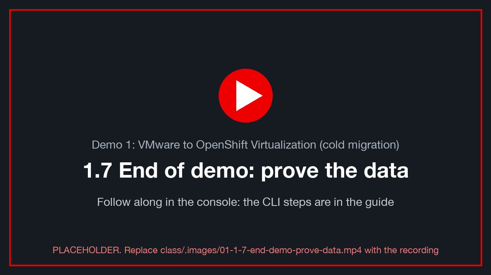class/.images/01-1-7-end-demo-prove-data.mp4).
mark site-a d1-end "demo 1 complete"
verify site-a
sql site-a -c "SELECT stage, id, ts FROM marks WHERE student = '$ME' ORDER BY id;"
Get-Content "C:\Users\Public\ovedr\$env:USERNAME.txt"
✅ Every stage you marked (lab0-hello, d1-before, d1-before-migration, d1-after-migration, d1-end) is
present and in order, and chain_ok = t.
✅ Your file holds every line you wrote, including the ones written on vSphere.
📸 01-final-verify: verify output and the stage list.
✍️ Row 1.5: the final fingerprint.
Thank you¶
Thank you for working through Demo 1. You moved a real Windows + PostgreSQL workload off VMware, kept every byte of its data, and saw how each vSphere building block (port group, datastore, VMware Tools) has an OpenShift counterpart. To keep learning:
- Lab S — how this lab was built: build the provider, maps and plan yourself (CLI + console)
- OpenShift Virtualization documentation (4.19)
- Migration Toolkit for Virtualization 2.11 documentation
- MTV: planning your migration (network and storage mapping) [verify link]
- OpenShift Virtualization: managing VMs (guest agent and VirtIO drivers) [verify link]
- OpenShift Virtualization: live migration [verify link]
- OpenShift Virtualization: backup and restore (VM snapshots) [verify link]
- Red Hat OpenShift Virtualization (product overview)
- DO316: Managing Virtual Machines with Red Hat OpenShift Virtualization (course)
- Red Hat interactive labs (free, in the browser)
- Red Hat Developer: OpenShift
- Migration Toolkit for Virtualization (product page) [verify: URL]
The bonus rounds below go further: moving a running VM between nodes, and recovering a destroyed database from a snapshot.
Bonus A: live migration between nodes (15 min)¶
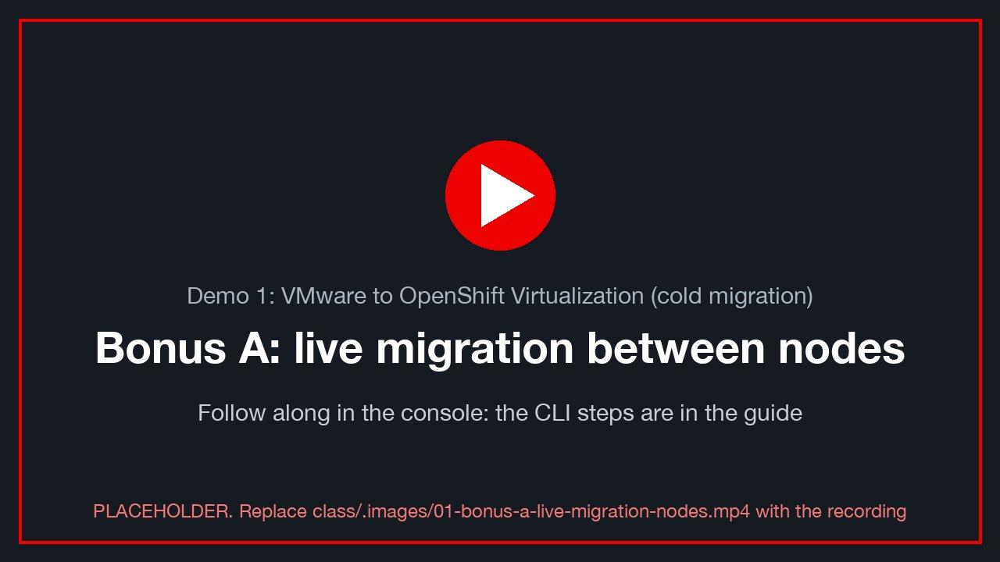class/.images/01-bonus-a-live-migration-nodes.mp4).
Goal: move the running VM from one OpenShift node to another, with no reboot and almost no gap.
A live migration copies the VM's memory to another node while it runs, then switches over in milliseconds. It needs the disks to be reachable from both nodes at once, which means ReadWriteMany (RWX) storage:
nfs-csi: RWX filesystem ✅- ODF's
ocs-storagecluster-ceph-rbd-virtualization: RWX block ✅
oc --context site-a -n "$VMNS" get vmi "$VM" \
-o jsonpath='{.status.conditions[?(@.type=="LiveMigratable")].status} {.status.conditions[?(@.type=="LiveMigratable")].message}{"\n"}'
oc --context site-a -n "$VMNS" get pvc -o custom-columns=NAME:.metadata.name,MODES:.spec.accessModes,SC:.spec.storageClassName
where # ✍️ the node it is on now
mark site-a d1-bonusA-before
✅ LiveMigratable=True. If it is False, the message names the reason: usually a RWO disk or a mounted CD.
Start the live migration:
virtctl --context site-a -n "$VMNS" migrate "$VM" 2>/dev/null || oc --context site-a apply -f - <<EOF
apiVersion: kubevirt.io/v1
kind: VirtualMachineInstanceMigration
metadata: { generateName: d1-live-, namespace: $VMNS }
spec: { vmiName: $VM }
EOF
Console: VM → Actions → Migrate → Compute (the wording varies by version).
Watch it:
oc --context site-a -n "$VMNS" get vmim -w # Scheduling → … → Succeeded
where # a different node
alive site-a # postgres_started UNCHANGED: no reboot
mark site-a d1-bonusA-after
verify site-a
sql site-a -c "SELECT max(gap) FROM (SELECT ts - lag(ts) OVER (ORDER BY id) AS gap
FROM heartbeat WHERE ts > now() - interval '10 minutes') g;"
✅ New node, same postgres_started, and the largest gap is around the normal 5 s tick (a cold move costs minutes).
✅ chain_ok = t.
📸 01-live-migration: the VM's overview showing the node change, or the vmim watch.
✍️ Row 1.A: from-node → to-node, the max gap, the fingerprint.
Bonus B: snapshot, destroy the database, restore from the snapshot's disks (25 min)¶
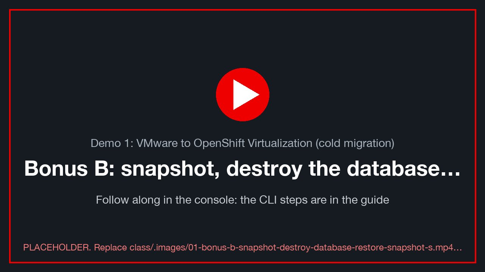class/.images/01-bonus-b-snapshot-destroy-database-restore-snapshot-s.mp4).
Goal: take a VM snapshot, delete the database for real, then bring the data back by attaching the snapshot's disks and restarting PostgreSQL.
⚠️ Data and WAL go together. PostgreSQL keeps its data on
D:and its write-ahead log onL:. If you restore onlyD:and keep today'sL:, PostgreSQL replays the newer WAL on start, including theDROP DATABASE, and you lose the database again. Restore both disks from the same snapshot. A VM snapshot with the guest agent freezes all disks at the same instant (VSS), so itsD:andL:match.
Snapshot¶
mark site-a d1-pre-snapshot "this row must come back"
oc --context site-a apply -f - <<EOF
apiVersion: snapshot.kubevirt.io/v1beta1
kind: VirtualMachineSnapshot
metadata: { name: $VM-d1-snap, namespace: $VMNS }
spec:
source: { apiGroup: kubevirt.io, kind: VirtualMachine, name: $VM }
EOF
oc --context site-a -n "$VMNS" get vmsnapshot "$VM-d1-snap" -w # Ctrl-C when READYTOUSE=true
oc --context site-a -n "$VMNS" get vmsnapshot "$VM-d1-snap" \
-o jsonpath='{.status.indications}{"\n"}' # ["Online","GuestAgent"]: frozen, consistent
Console: VM → Snapshots → Take snapshot.
Each storage option ships its own VolumeSnapshotClass (ODF's, or nfs-csi-snapclass on NFS;
Lab S §S.4); without a class the snapshot stays not ready. Red Hat:
Backing up and restoring VMs with snapshots [verify link].
📸 01-snapshot-ready: the Snapshots tab with the snapshot Ready and indications Online, GuestAgent.
Now write a row after the snapshot. It exists only in the live database, so the restore must lose it:
mark site-a d1-after-snapshot "this row must NOT come back"
Delete the database¶
In your VM's console, in an elevated PowerShell (Run as administrator: on your own VM, your .\student-NN
login is a local administrator [verify: BL-D10]), stop the heartbeat writer so that it doesn't recreate anything:
Disable-ScheduledTask -TaskName bcdr-heartbeat | Out-Null
Stop-ScheduledTask -TaskName bcdr-heartbeat
Then drop the database (the bcdr role owns it):
oc --context site-a -n ovedr-app exec -i deploy/sql-client -- \
psql -h "$PGHOST" -U bcdr -d postgres -c 'DROP DATABASE bcdr WITH (FORCE);'
Confirm the damage:
verify site-a # FATAL: database "bcdr" does not exist. That is the disaster.
📸 01-database-gone: the does not exist error.
Shut PostgreSQL down and take the damaged disks offline¶
Stop-Service postgresql-16
$bad = foreach ($l in 'D','L') { Get-Partition -DriveLetter $l | Get-Disk }
$bad | Format-Table Number, FriendlyName, SerialNumber, @{n='GB';e={[math]::Round($_.Size/1GB)}}
foreach ($l in 'D','L') { Get-Partition -DriveLetter $l | Remove-PartitionAccessPath -AccessPath "$($l):\" }
$bad | ForEach-Object { Set-Disk -Number $_.Number -IsOffline $true }
Create volumes from the snapshot's D: and L: and hot-plug them¶
The snapshot holds one VolumeSnapshot per disk. Pick the 10 Gi (D:) and 5 Gi (L:) ones:
NS=$VMNS; CTX=site-a
CONTENT=$(oc --context $CTX -n $NS get vmsnapshot "$VM-d1-snap" -o jsonpath='{.status.virtualMachineSnapshotContentName}')
oc --context $CTX -n $NS get vmsnapshotcontent "$CONTENT" \
-o jsonpath='{range .spec.volumeBackups[*]}{.volumeName}{" "}{.persistentVolumeClaim.metadata.name}{" "}{.persistentVolumeClaim.spec.resources.requests.storage}{" "}{.volumeSnapshotName}{"\n"}{end}'
For each of the two rows (10Gi and 5Gi), create a PVC from its VolumeSnapshot. It uses the same class, access mode, volume mode and size as the original:
restore_pvc() { # restore_pvc <original pvc> <volumesnapshot> <new name>
oc --context $CTX -n $NS get pvc "$1" -o json | jq --arg s "$2" --arg n "$3" '{
apiVersion: "v1", kind: "PersistentVolumeClaim",
metadata: {name: $n, namespace: .metadata.namespace},
spec: {storageClassName: .spec.storageClassName, accessModes: .spec.accessModes,
volumeMode: .spec.volumeMode, resources: .spec.resources,
dataSource: {apiGroup: "snapshot.storage.k8s.io", kind: "VolumeSnapshot", name: $s}}}' \
| oc --context $CTX apply -f -
}
# fill these four from the snapshot table above: the 10Gi (D:, data) and 5Gi (L:, WAL) PVCs and their VolumeSnapshots
DATA_PVC='<10Gi pvc>'; DATA_SNAP='<its volumesnapshot>'
WAL_PVC='<5Gi pvc>'; WAL_SNAP='<its volumesnapshot>'
restore_pvc "$DATA_PVC" "$DATA_SNAP" "$VM-restored-data"
restore_pvc "$WAL_PVC" "$WAL_SNAP" "$VM-restored-wal"
oc --context $CTX -n $NS get pvc "$VM-restored-data" "$VM-restored-wal" -w # Bound
Hot-plug both into the running VM:
for v in "$VM-restored-data" "$VM-restored-wal"; do
virtctl --context $CTX -n $NS addvolume "$VM" --volume-name="$v" --serial="${v##*-}" --persist
done
oc --context $CTX -n $NS get vmi "$VM" -o jsonpath='{range .status.volumeStatus[*]}{.name}{" "}{.phase}{"\n"}{end}'
✅ Both volumes show Ready (hot-plugged on the virtio-SCSI bus) [verify: hot-plug on this cluster, and the
vioscsi driver in the guest].
Bring the restored disks online as D: and L:, start PostgreSQL¶
Update-HostStorageCache
Get-Disk | Where-Object IsOffline | Format-Table Number, SerialNumber, @{n='GB';e={[math]::Round($_.Size/1GB)}}, OperationalStatus
# the restored disks have serials "data" and "wal" (from --serial above); match on that, never on disk number
foreach ($m in @(@{Serial='data'; Letter='D'}, @{Serial='wal'; Letter='L'})) {
$d = Get-Disk | Where-Object { $_.SerialNumber -eq $m.Serial }
Set-Disk -Number $d.Number -IsOffline $false
Set-Disk -Number $d.Number -IsReadOnly $false
Get-Partition -DiskNumber $d.Number | Where-Object Type -eq 'Basic' | Set-Partition -NewDriveLetter $m.Letter
}
Get-Volume -DriveLetter D, L | Format-Table DriveLetter, FileSystemLabel, Size, HealthStatus
Start-Service postgresql-16
Enable-ScheduledTask -TaskName bcdr-heartbeat | Out-Null
Start-ScheduledTask -TaskName bcdr-heartbeat
(The restored disks are copies of the originals, so Windows may first report a signature collision. Bringing the copy online while the originals are offline gives it a new signature. That is expected.)
📸 01-disks-restored: Disk Management, with the restored disks online as D: (pgdata) and L: (pg_wal) and
the originals offline.
What came back¶
verify site-a
sql site-a -c "SELECT stage, id, ts FROM marks WHERE student = '$ME' ORDER BY id DESC LIMIT 5;"
alive site-a
mark site-a d1-bonusB-restored
✅ The database exists again, chain_ok = t, and your newest row is d1-pre-snapshot.
✅ d1-after-snapshot is gone. It was written after the snapshot, so it was never in it. This is the
recovery point: a restore returns you to the moment of the snapshot, not to the moment of the disaster.
✍️ Row 1.B: the snapshot time, the last surviving mark, and the time the database was back.
The other way: restore the whole VM¶
Swapping disks by hand teaches what a restore really is. In production you would restore the whole VM:
virtctl --context site-a -n "$VMNS" stop "$VM"
oc --context site-a apply -f - <<EOF
apiVersion: snapshot.kubevirt.io/v1beta1
kind: VirtualMachineRestore
metadata: { name: $VM-d1-restore, namespace: $VMNS }
spec:
target: { apiGroup: kubevirt.io, kind: VirtualMachine, name: $VM }
virtualMachineSnapshotName: $VM-d1-snap
EOF
oc --context site-a -n "$VMNS" get vmrestore "$VM-d1-restore" -w # COMPLETE=true
virtctl --context site-a -n "$VMNS" start "$VM"
That brings every disk, C: included, back to the snapshot in one step, at the cost of a VM restart.
Tidy up after Bonus B¶
The VM now carries two extra (restored) disks, and its original D: and L: are offline. Before the next demo,
either restore the whole VM (above), or stop the VM and remove the old volumes in Configuration → Storage
[verify: BL-D11, a clean "post-bonus" state for demos 2-4].
Bonus C: deploy a new VM from a Red Hat template, on your VLAN, with a data disk (20 min)¶
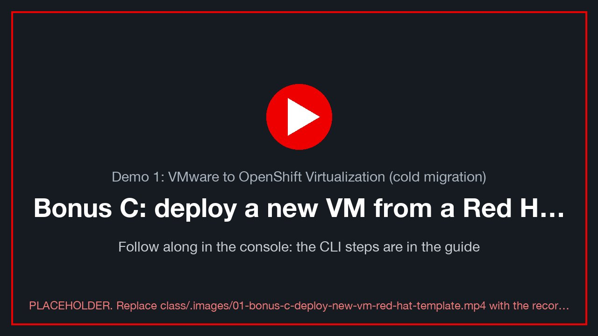class/.images/01-bonus-c-deploy-new-vm-red-hat-template.mp4).
Section 1.3 showed the replatform path: rather than moving an old VM, build a new one from a Red Hat-supplied template and boot source, then move the application onto it. Here you do that: a CentOS Stream 9 server in your namespace, attached to your VLAN's bridge (like your migrated VM), plus a data disk. Red Hat: Creating VMs from templates [verify link] · Networking for VMs [verify link] · Storage for VMs [verify link].
1 · Pick the template, then Customize¶
Console, site A, project = your namespace ($VMNS, top of the page) → Virtualization → Catalog → Template catalog
→ CentOS Stream 9 VM (centos-stream9-server-small, ✓ Source available).
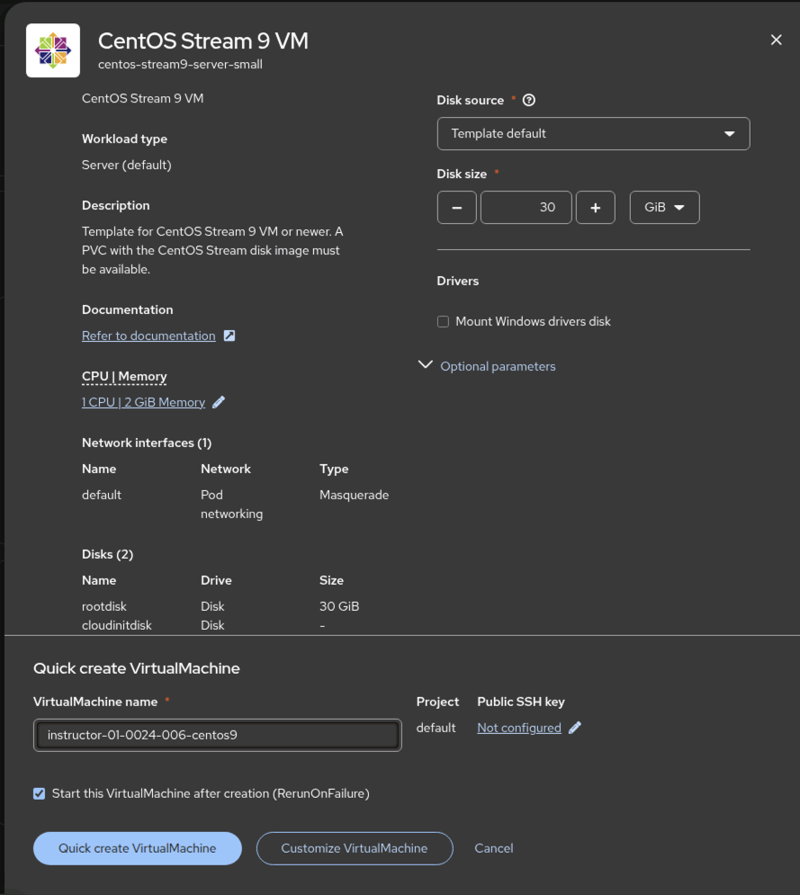
The template's quick-create panel. Name it<your class ID>-centos9. ⚠ Check Project says your namespace, not
default (switch the project at the top of the page first). Click Customize VirtualMachine, not Quick create, so you
can change the network and add a disk.
2 · Put the NIC on your VLAN's bridge¶
Customize → Network interfaces → default → ⋮ Edit. Change Network from Pod networking to your VLAN's bridge
vmnet<22+N> (e.g. vmnet23 for lz1), keep Model: virtio, Save.
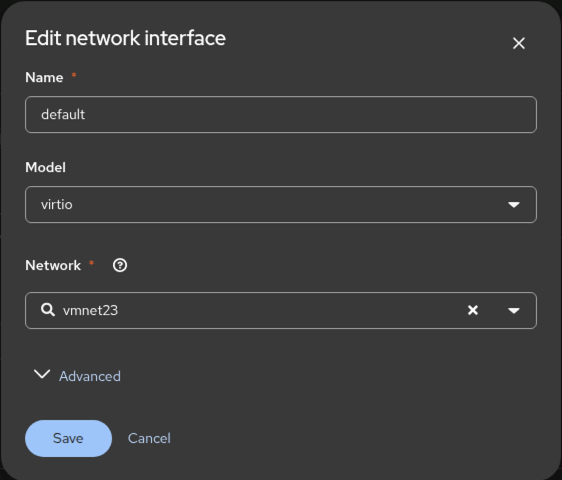
The template's NIC moved from the pod network to the VLAN bridgevmnet23: the VM is now on the same layer-2 network
as the vSphere VMs and your migrated VM.
⚠️ No DHCP on the lab VLANs (BL-D12). On the bridge your VM needs a static address. Set it in Customize → Scripts → Cloud-init → Network data (or the YAML below):
10.101.<22+N>.<150+NN>/24, gateway10.101.<22+N>.1, DNS10.101.6.201, 10.101.6.202. Use yourNNso no two students collide.
3 · Add a data disk¶
Customize → Disks → Add disk → Empty disk (blank): name <your class ID>-centos9-data, 10 GiB, Type Disk,
Interface VirtIO, StorageClass this site's class (nfs-csi, or ocs-storagecluster-ceph-rbd-virtualization on an
ODF site). Save.
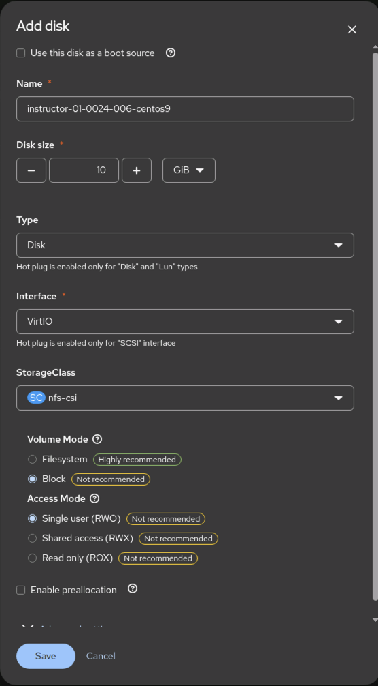
The Add disk dialog. Onnfs-csi, choose Volume Mode: Filesystem (marked Highly recommended) and Access Mode:
Shared access (RWX), so the VM can live-migrate (Bonus A); the dialog's defaults (Block, RWO) are flagged
Not recommended for this class. On ODF, Block + RWX is the recommended pair.
Then Create VirtualMachine. It boots in under a minute (the boot source is already on the cluster).
The same from the command line¶
Everything in steps 1-3 is one VirtualMachine manifest:
class/examples/centos9-vm-from-template.yaml. It was exported from
the console after the steps above, with the cluster-generated fields and the password removed. Each part is commented
with the console step it replaces: the root disk cloned from Red Hat's boot source, the blank data disk, the NIC on
your VLAN's bridge, and cloud-init for your login key and static address.
export NAME="$VMNS-centos9" VLAN=$((22 + N)) SC=nfs-csi # SC: ocs-storagecluster-ceph-rbd-virtualization on an ODF site
export VIP="10.101.$VLAN.$((150 + 10#${WINUSER#student-}))" # your static address on the VLAN (no lab DHCP)
[ -f ~/.ssh/id_ed25519.pub ] || ssh-keygen -t ed25519 -N '' -f ~/.ssh/id_ed25519
export SSH_PUBKEY="$(cat ~/.ssh/id_ed25519.pub)"
envsubst < class/examples/centos9-vm-from-template.yaml | oc --context site-a -n "$VMNS" apply -f -
oc --context site-a -n "$VMNS" get vm,dv "$NAME" "$NAME-data" # DataVolumes clone/create, then the VM runs
oc --context site-a -n "$VMNS" wait vmi/"$NAME" --for=jsonpath='{.status.phase}'=Running --timeout=10m
ssh centos@"$VIP" 'lsblk; ip -4 addr show eth0' # your key, your address
4 · Use the data disk, and prove it¶
Log in: ssh centos@$VIP if you used the YAML, or the Console tab (the user and password the template generated
are on the VM's Overview → Details):
lsblk # the 10 GiB disk with no partitions is your data disk (vdc from the YAML, vdb from the console)
DATA=/dev/vdc # ← the one lsblk showed
sudo mkfs.xfs "$DATA" && sudo mkdir -p /data && sudo mount "$DATA" /data
echo "$(date -Is) bonus-c $(hostname)" | sudo tee /data/hello.txt
ip -4 addr show # your static address on the VLAN
ping -c 2 10.101.<22+N>.1 # the VLAN gateway answers: you are on the bridge, not the pod network
The replatform story: the new server reaches the old one (your migrated Windows VM) directly on the same VLAN. In the CentOS VM:
timeout 3 bash -c '</dev/tcp/<your VM_IP>/5432' && echo "PostgreSQL on the migrated VM: reachable from the new VM"
📸 01-template-vm-running: the new VM's Overview, Running, with its VLAN address.
✍️ Row 1.C: the new VM's name, its VLAN address, and that it reached your migrated VM's PostgreSQL port.
Proof table: Demo 1¶
| Row | Stage | Mark id | chain_ok |
Fingerprint | Notes |
|---|---|---|---|---|---|
| 1.1 | d1-before | VLAN of vm-network: |
|||
| 1.2 | d1-before-migration | ||||
| 1.3 | migration | — | — | — | start → end: |
| 1.4 | d1-after-migration | outage (gap): | |||
| 1.5 | d1-end | ||||
| 1.A | d1-bonusA-after | node → node, max gap: | |||
| 1.B | d1-bonusB-restored | last surviving mark: | |||
| 1.C | Bonus C: VM from a template | new VM address: |